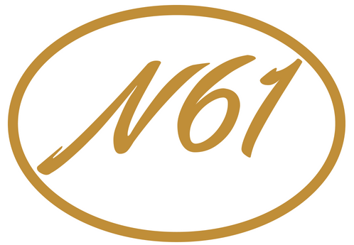

<ion-header>
  <ion-navbar>
    <ion-buttons left>
      
    </ion-buttons>
    <ion-title>{{titulo}}</ion-title>
    <ion-buttons end>
      {{ usuario }}
    </ion-buttons>
  </ion-navbar>
</ion-header>

<ion-content>
  <ion-split-pane>
    <ion-menu [content]="nav">
      <ion-list>
        <button ion-item *ngFor="let item of menu" (click)="abrirPagina(item)" menuClose>
          {{ item.titulo }}
        </button>
        <button ion-item menuClose (click)="cerrarSesion()">
          Cerrar sesión
        </button>
      </ion-list>
    </ion-menu>

    <ion-nav #nav [root]="rootPage" main></ion-nav>

  </ion-split-pane>
</ion-content>